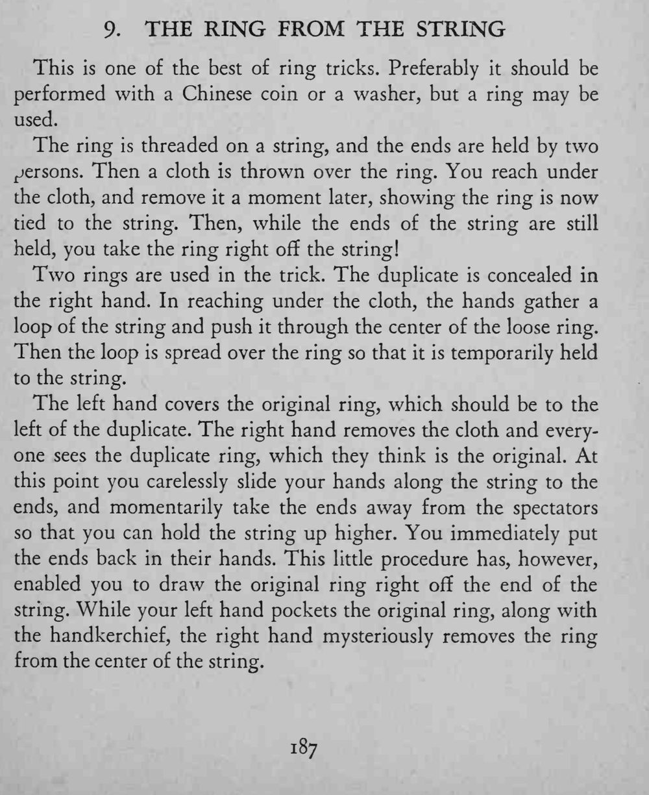

戒指穿在绳上、两端由两位观众拉着；布一盖再揭开，戒指竟被系在了绳上；紧接着，魔术师当着两位观众的面把戒指从绳上取下。
两枚戒指要一模一样，取绳端的动作要自然，全程不能让人起疑。

This is one of the best of ring tricks. Preferably it should be performed with a Chinese coin or a washer, but a ring may be used. The ring is threaded on a string, and the ends are held by two persons. Then a cloth is thrown over the ring. You reach under the cloth, and remove it a moment later, showing the ring is now tied to the string. Then, while the ends of the string are still held, you take the ring right off the string! Two rings are used in the trick. The duplicate is concealed in the right hand. In reaching under the cloth, the hands gather a loop of the string and push it through the center of the loose ring. Then the loop is spread over the ring so that it is temporarily held to the string. The left hand covers the original ring, which should be to the left of the duplicate. The right hand removes the cloth and everyone sees the duplicate ring, which they think is the original. At this point you carelessly slide your hands along the string to the ends, and momentarily take the ends away from the spectators so that you can hold the string up higher. You immediately put the ends back in their hands. This little procedure has, however, enabled you to draw the original ring right off the end of the string. While your left hand pockets the original ring, along with the handkerchief, the right hand mysteriously removes the ring from the center of the string.